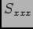

Next: Environmental Scenario ()
Up: Additional simulator components
Previous: Additional simulator components
Contents
This represents the execution environment's model of timing...
Figure 7.1.1 shows examples of the distribution of execution times derived for a single group calculated 100000 times. The two plots show the effect of different assumptions on the contributions of seperate random timing events. The group consisting 12x30s exposures with 3 config changes and 3 target changes (slews).
Figure 39:
Distribution of execution times for stochastic execution model. Mono plot uses a single calculation to total up contribution of all events, multi plot works out a seperate random effect for each contributing event
|

|
Steve Fraser
2008-01-31